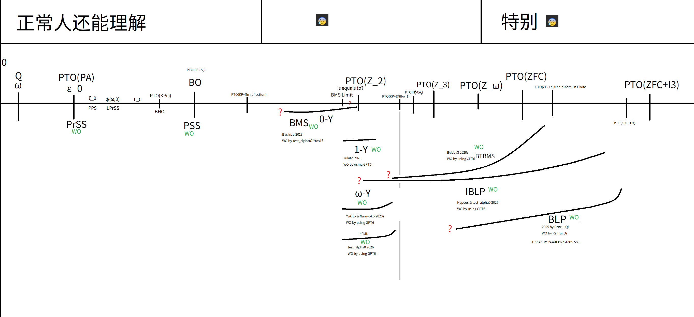

参考https://wiki.googology.top/index.php/BTBMS
BTBMS，是由Bubby3和社区讨论给出理念，并于2026年7月14日由笑姐姐给出完整定义（参见NE Rewritten）的序数记号。
BTBMS可能是现有递归Hydra记号里强度最高的一个。
关于BTBMS，由于早期记号定义不完善，许多分析者给出了Y(1,3,4,2,5,8,11),Y(1,3,4,6), Y(1,3,5)等结果
笑姐姐给出BTBMS完整定义后，test_alpha0进行了BTBMS的分析，得出\mathrm{BTBMS limit} = Y(1,3,9)，但是2026年9月15日142857cs找到了(0)(1^{(2,2)},1,1)\mapsto Y(1,3,9)的程序，推翻了这一结果；2026年9月25日test_alpha0给出了(0)(1^{(2,2)(3,2)(4)})\mapsto \omega\mathrm{-Y Limit}的程序，随后是(0)(1^{(2,2)(3,3)})\mapsto \eps_0\mathrm{MN Limit}，BTBMS就此成为可能是递归Hydra记号里强度最高的一个。
在\eps_0\mathrm{MN Limit}之后，BTBMS基本只能与iblp对照（两者都有良序证明）。
现有假说认为BTBMS极限超过了理想Ω-Y极限，甚至iblp极限。
此外，有一个由美国某两个AI公司的大模型给出的IBLP vs BTBMS分析指出\mathrm{IBLP Limit}=(0)(1^{(2,1,1,1)})(0)(3)(3)(3)(3)，但这一结果并未得到验证。
BTBMS在\mathrm{ZFC}+\exists n-\mathsf{Mahlo}下是良序的。

BMS和BTBMS在(0)(1^{(2)})前是等价的,BMS与ω-Y之间有转换程序，ω-Y序列和ωMN之间是相似的，但他们在1,3,6 = 0 ,,1 2,,1 32后将不能完全互译。
关于BMS到ω-Y序列的转换，可以首先用0100000000a7的BMS analyzer enhanced将BMS转换成类似Y序列的Tri BMS，再用Naruyoko的BMS转0-Y程序将Tri BMS转换成1-Y形式。
ω-Y序列到BMS的转换，0100000000a7的BMS analyzer enhanced已经提供，点击ω-Y后输入ω-Y序列即可使用。
BTBMS的1,3,4,2,5,8,10前段与TBMS相同。
0 ,,1 2 1 2,,1 31前2,,1并没有特殊之处，我们有
\begin{array}{l} (0)(1^{(2)})(2)(1^{(4)}) = \text{0 ,,1 2 1 2,,1 3 2,,1}=1,3,4,2,5,6,5\\ (0)(1^{(2)})(2)(1^{(4)})(4) = \text{0 ,,1 2 1 2,,1 3 2,,1 3}=1,3,4,2,5,6,5,6\\ (0)(1^{(2)})(2)(2) = \text{0 ,,1 2 1 2,,1 3 3}=1,3,4,2,5,6,6\\ (0)(1^{(2)})(2)(3) = \text{0 ,,1 2 1 2,,1 3 4}=1,3,4,2,5,6,7\\ (0)(1^{(2)})(2)(3,3) = \text{0 ,,1 2 1 2,,1 3 41}=1,3,4,2,5,6,8\\ (0)(1^{(2)})(2)(3^{(4)}) = \text{0 ,,1 2 1 2,,1 3 4,,1}=1,3,4,2,5,6,9\\ (0)(1^{(2)})(2,1) = \text{0 ,,1 2 1 2,,1 31}=1,3,4,2,5,7\\ \end{array}
但是0 ,,1 2 1 2,,1 31 2,,1就特殊了，它的展开式为 0 ,,1 2 1 2,,1 31 21 32,,1 (421) 321 432,,1 (5321) 4321 5432,,1 (64321) ...
括号括起来的ωMN项产生了(0)(1^{(2)})(2,1) \to (0)(1^{(2)})(2,1,1) \to (0)(1^{(2)})(2,1,1,1) \cdots
因此我们有(0)(1^{(2)})(2,1^{(3)}) = \text{0 ,,1 2 1 2,,1 31 2,,1}。
这是一个类似于(0)(1,1,1)(2,1)(1,1,1)的提升，但是2,,1把31的row从2提升了，直到无穷大。
这里的分析涉及到Y和BMS的在1,2,4,8,10,8的错层，具体体现在0 ,,1 2 1 2,,1 31 21 32,,1 41 32,,1(1,3,4,2,5,7,4,9,11,9) 和0 ,,1 2 1 2,,1 31 21 32,,1 42 32,,1(1,3,4,2,5,7,4,9,12,9)。
\begin{array}{l} (0)(1^{(2)})(2,1) = \text{0 ,,1 2 1 2,,1 31} = 1,3,4,2,5,7\\ (0)(1^{(2)})(2,1)(1,1) = \text{0 ,,1 2 1 2,,1 31 21} = 1,3,4,2,5,7,4\\ (0)(1^{(2)})(2,1)(1,1)(4^{(5)}) = \text{0 ,,1 2 1 2,,1 31 21 32,,1} = 1,3,4,2,5,7,4,9 \\ (0)(1^{(2)})(2,1)(1,1)(4^{(5)})(5,1) = \text{0 ,,1 2 1 2,,1 31 21 32,,1 41} = 1,3,4,2,5,7,4,9,11\\ (0)(1^{(2)})(2,1)(1,1)(4^{(5)})(5,4) = \text{0 ,,1 2 1 2,,1 31 21 32,,1 42}= 1,3,4,2,5,7,4,9,12\\ (0)(1^{(2)})(2,1)(1,1,1) = \text{0 ,,1 2 1 2,,1 31 21 32,,1 42 321}= 1,3,4,2,5,7,4,9,12,8\\ (0)(1^{(2)})(2,1)(1^{(4)}) = \text{0 ,,1 2 1 2,,1 31 21 32,,1 42 32,,1}= 1,3,4,2,5,7,4,9,12,9\\ (0)(1^{(2)})(2,1)(2,1) = \text{0 ,,1 2 1 2,,1 31 21 32,,1 42 41}= 1,3,4,2,5,7,4,9,12,11\\ (0)(1^{(2)})(2,1)(3,3) = \text{0 ,,1 2 1 2,,1 31 21 32,,1 42 53}= 1,3,4,2,5,7,4,9,12,16\\ (0)(1^{(2)})(2,1)(3^{(4)}) = \text{0 ,,1 2 1 2,,1 31 21 32,,1 42 53,,1}= 1,3,4,2,5,7,4,9,12,18\\ (0)(1^{(2)})(2,1,1) = \text{0 ,,1 2 1 2,,1 31 21 32,,1 421}= 1,3,4,2,5,7,4,9,13\\ (0)(1^{(2)})(2,1,1,1) = \text{0 ,,1 2 1 2,,1 31 21 32,,1 421 321 432,,1 5321}= 1,3,4,2,5,7,4,9,13,8,17,25\\ (0)(1^{(2)})(2,1^{(3)}) = \text{0 ,,1 2 1 2,,1 31 2,,1}= 1,3,4,2,5,7,5\\ \end{array}
0 ,,1 2 1 2,,1 31 2,,1 2,,1和(0)(1,1,1)(2,1)(1,1,1)(1,1,1)一样，也没有一个明显的提升。
0 ,,1 2 1 2,,1 31 2,,1 21 32,,1 [421 32,,1] 321 432,,1 [5321 432,,1] ...
因为421 32,,1的32,,1提升，替[2,,1 31 2,,1 2,,1]最后的2,,1挡了一刀。
因此\text{0 ,,1 2 1 2,,1 31 2,,1 2,,1} = (0)(1^{(2)})(2,1^{(3)})(1^{(4)})
0 ,,1 2 1 2,,1 31 2,,1 31 2,,1也提升了最后两项的2,,1，因此(0)(1^{(2)})(2,1^{(3)})(1^{(4)})(4,1^{(5)}) = \text{0 ,,1 2 1 2,,1 31 2,,1 31 2,,1} = 1,3,4,2,5,7,5,7,5
(0)(1^{(2)})(2,1^{(3)})(2,1^{(4)}) = \text{0 ,,1 2 1 2,,1 31 31 2,,1} = 1,3,4,2,5,7,7,5同理。
同样的，0 ,,1 2 1 2,,1 31 41 2,,1的2,,1提升41（与(0)(1,1,1)(2,1)(3,1)(1,1,1)相似），(0)(1^{(2)})(2,1^{(3)})(3,1^{(4)}) = \text{0 ,,1 2 1 2,,1 31 41 2,,1} = 1,3,4,2,5,7,9,5
最终有(0)(1^{(2)})(2,2)=\text{0 ,,1 2 1 2,,1 31 42} = 1,3,4,2,5,7,10
0 ,,1 2 1 2,,1 31 42 2,,1看起来和(0)(1,1,1)(2,1)(3,2)(1,1,1)相似，(1,1,1)也把(3,2)提升到了(4,3)，但是这两个“提升”完全不同。
(0)(1,1,1)(2,1)(3,2)(1,1,1)没有本质上的提升。(0)(1,1,1)(2,1)(3,2)(1,1,1)的(2,1)(3,2)提升了个滚木,作用和之前是相同的。
而0 ,,1 2 1 2,,1 31 42 2,,1展开成0 ,,1 2 1 2,,1 31 [42] 21 32,,1 421 [532] 321 432,,1 5321 [6432] 4321 5432,,1 64321 [75432] ……
0 ,,1 2 1 2,,1 31 [42] 21 32,,1 421 [532]对应(0)(1,1)(2^{(3)})(3,2,1)(4,3,2)(虽然421因为2,,1的缘故被提升了，不过其底下的0 ,,1 2 1 2,,1 31 42 21 32,,1 421 32,,1将此差距抹除了)，相当于(0)(1^{(2)})(2,2,2)。
0 ,,1 2 1 2,,1 31 [42] 21 32,,1 421 [532] 321 432,,1 5321 [6432]就对应(0)(1,1)(2,2,2)(3^{(4)})(4,3,2,1)(5,4,3,2)，相当于(0)(1^{(2)})(2,2,2,2)。
因此(0)(1^{(2)})(2^{(3)})=\text{0 ,,1 2 1 2,,1 31 42 2,,1} = 1,3,4,2,5,7,10,5。
其实这里有许多地方很有趣，比如说(0)(1^{(2)})(2,2,1^{(3)})=\text{0 ,,1 2 1 2,,1 31 42 21 32,,1 421 531 32,,1} =1,3,4,2,5,7,10,4,9,13,19,9。但是鉴于此处分析太过😰所以就跳过了
也有许多人好奇(0)(1^{(2)})(2,2)(2,2)是什么东西，这里我用最直白、最直接、最不绕弯子的方式告诉你：给出答案: (0)(1^{(2)})(2,2)(2,2)=\text{0 ,,1 2 1 2,,1 31 42 21 32,,1 421 53
53}=1,3,4,2,5,7,10,4,9,13,18,18
。原理是，先通过0 ,,1 2 1 2,,1 31 42 21 32,,1 421 53 421 32,,1(1,3,4,2,5,7,10,4,9,13,18,13,9)欠出一个(0)(1^{(2)})(2,2)(2,1^{(4)})来，然后在(2,1^{(4)})的基础上有所成就，最后得到最终答案。
根据上文所提到的提升，我们继续分析: (不过这里还是有一些错层)
\begin{array}{l} (0)(1^{(2)})(2^{(3)})(2,1^{(4)}) = \text{0 ,,1 2 1 2,,1 31 42 31 2,,1} = 1,3,4,2,5,7,10,7,5 \\ (0)(1^{(2)})(2^{(3)})(2,1^{(4)})(3,2^{(5)})(3,1^{(6)}) = \text{0 ,,1 2 1 2,,1 31 42 41 2,,1} = 1,3,4,2,5,7,10,9,5 \\ (0)(1^{(2)})(2^{(3)})(2,2) = \text{0 ,,1 2 1 2,,1 31 42 42} = 1,3,4,2,5,7,10,10 \\ (0)(1^{(2)})(2^{(3)})(2^{(4)}) = \text{0 ,,1 2 1 2,,1 31 42 42 2,,1}= 1,3,4,2,5,7,10,10,5 \\ (0)(1^{(2)})(2^{(3)})(3) = \text{0 ,,1 2 1 2,,1 31 42 5}= 1,3,4,2,5,7,10,11 \\ (0)(1^{(2)})(2^{(3)})(3,1) = \text{0 ,,1 2 1 2,,1 31 42 51}= 1,3,4,2,5,7,10,12 \\ (0)(1^{(2)})(2^{(3)})(3,1^{(4)}) = \text{0 ,,1 2 1 2,,1 31 42 51 2,,1}= 1,3,4,2,5,7,10,12,5 \\ (0)(1^{(2)})(2^{(3)})(3,2) = \text{0 ,,1 2 1 2,,1 31 42 52}= 1,3,4,2,5,7,10,13 \\ (0)(1^{(2)})(2^{(3)})(3,2^{(4)}) = \text{0 ,,1 2 1 2,,1 31 42 52 2,,1}= 1,3,4,2,5,7,10,13,5 \\ (0)(1^{(2)})(2^{(3)})(3,3) = \text{0 ,,1 2 1 2,,1 31 42 53}= 1,3,4,2,5,7,10,14 \\ \end{array}
这里我们又遇到了一个熟悉的东西:这类似于0 ,,1 2 1 2,,1 31 42 2,,1，或者说(0)(1,1,1)(2,1)(3,2)(4,3)(1,1,1)。这里也能提升。
0 ,,1 2 1 2,,1 31 42 53 2,,1展开成0 ,,1 2 1 2,,1 31 42 53 21 32,,1 421 532 [643] 321 432,,1 5321 6432 [7543] 4321 5432,,1 64321 75432 [86543] ……
0 ,,1 2 1 2,,1 31 42 53 21 32,,1 421 532 [643]对应(0)(1^{(2)})(2^{(3)})(3,3,3)
0 ,,1 2 1 2,,1 31 42 53 21 32,,1 421 532 [643] 321 432,,1 5321 6432 [7543]对应(0)(1^{(2)})(2^{(3)})(3,3,3,3)
因此我们有(0)(1^{(2)})(2^{(3)})(3^{(4)}) =\text{0 ,,1 2 1 2,,1 31 42 53 2,,1} = 1,3,4,2,5,7,10,14,5
直到ω+1行BMS,我们有(0)(1^{(2)})(2^{(3)})(3^{(4)})(4^{(5)}) =\text{0 ,,1 2 1 2,,1 31 42 53 64 2,,1} = 1,3,4,2,5,7,10,14,19,5，直到(0)(1^{(2)},1) =\text{0 ,,1 2 1 2,,1 31 421} = 1,3,4,2,5,7,11.
\begin{array}{l} (0)(1^{(2)})(2^{(3)})(3,3) = \text{0 ,,1 2 1 2,,1 31 42 53} \\ (0)(1^{(2)})(2^{(3)})(3,3)(1,1)(5^{(6)})(6,1) = \text{0 ,,1 2 1 2,,1 31 42 53 21 32,,1 421} \\ (0)(1^{(2)})(2^{(3)})(3,3)(1,1)(5^{(6)})(6,1^{(7)}) = \text{0 ,,1 2 1 2,,1 31 42 53 21 32,,1 421 32,,1} \\ (0)(1^{(2)})(2^{(3)})(3,3)(1,1)(5^{(6)})(6,6) = \text{0 ,,1 2 1 2,,1 31 42 53 21 32,,1 421 53} \\ (0)(1^{(2)})(2^{(3)})(3,3)(1,1)(5^{(6)})(6,6,6) = \text{0 ,,1 2 1 2,,1 31 42 53 21 32,,1 421 532} \\ (0)(1^{(2)})(2^{(3)})(3,3)(1,1)(5^{(6)})(6^{(7)}) = \text{0 ,,1 2 1 2,,1 31 42 53 21 32,,1 421 532 32,,1} \\ (0)(1^{(2)})(2^{(3)})(3,3)(1,1)(5^{(6)})(6^{(7)})(7) = \text{0 ,,1 2 1 2,,1 31 42 53 21 32,,1 421 532 6} \\ (0)(1^{(2)})(2^{(3)})(3,3)(1,1)(5^{(6)})(6^{(7)})(7,1) = \text{0 ,,1 2 1 2,,1 31 42 53 21 32,,1 421 532 61} \\ (0)(1^{(2)})(2^{(3)})(3,3)(1,1)(5^{(6)})(6^{(7)})(7,5) = \text{0 ,,1 2 1 2,,1 31 42 53 21 32,,1 421 532 62} \\ (0)(1^{(2)})(2^{(3)})(3,3)(1,1)(5^{(6)})(6^{(7)})(7,6) = \text{0 ,,1 2 1 2,,1 31 42 53 21 32,,1 421 532 63} \\ (0)(1^{(2)})(2^{(3)})(3,3)(1,1)(5^{(6)})(6^{(7)})(7,7) = \text{0 ,,1 2 1 2,,1 31 42 53 21 32,,1 421 532 64} \\ (0)(1^{(2)})(2^{(3)})(3,3)(3,3) = \text{0 ,,1 2 1 2,,1 31 42 53 21 32,,1 421 532 64 64} \\ (0)(1^{(2)})(2^{(3)})(3,3)(4) = \text{0 ,,1 2 1 2,,1 31 42 53 21 32,,1 421 532 64 7} \\ (0)(1^{(2)})(2^{(3)})(3,3,1) = \text{0 ,,1 2 1 2,,1 31 42 53 21 32,,1 421 532 641} \\ (0)(1^{(2)})(2^{(3)})(3,3,1^{(4)}) = \text{0 ,,1 2 1 2,,1 31 42 53 21 32,,1 421 532 641 32,,1} \\ (0)(1^{(2)})(2^{(3)})(3,3,2) = \text{0 ,,1 2 1 2,,1 31 42 53 21 32,,1 421 532 642} \\ (0)(1^{(2)})(2^{(3)})(3,3,2^{(4)}) = \text{0 ,,1 2 1 2,,1 31 42 53 21 32,,1 421 532 642 32,,1} \\ (0)(1^{(2)})(2^{(3)})(3,3,3) = \text{0 ,,1 2 1 2,,1 31 42 53 21 32,,1 421 532 643} \\ (0)(1^{(2)})(2^{(3)})(3^{(4)}) = \text{0 ,,1 2 1 2,,1 31 42 53 2,,1} \\ (0)(1^{(2)})(2^{(3)})(3^{(4)})(4,4) = \text{0 ,,1 2 1 2,,1 31 42 53 64} \\ (0)(1^{(2)})(2^{(3)})(3^{(4)})(4,4,1) = \text{0 ,,1 2 1 2,,1 31 42 53 64 21 32,,1 421 532 643 751} \\ (0)(1^{(2)})(2^{(3)})(3^{(4)})(4,4,2) = \text{0 ,,1 2 1 2,,1 31 42 53 64 21 32,,1 421 532 643 752} \\ (0)(1^{(2)})(2^{(3)})(3^{(4)})(4,4,3) = \text{0 ,,1 2 1 2,,1 31 42 53 64 21 32,,1 421 532 643 753} \\ (0)(1^{(2)})(2^{(3)})(3^{(4)})(4,4,4) = \text{0 ,,1 2 1 2,,1 31 42 53 64 21 32,,1 421 532 643 754} \\ (0)(1^{(2)})(2^{(3)})(3^{(4)})(4^{(5)}) = \text{0 ,,1 2 1 2,,1 31 42 53 64 2,,1} \\ (0)(1^{(2)})(2^{(3)})(3^{(4)})(4^{(5)})(5^{(6)}) = \text{0 ,,1 2 1 2,,1 31 42 53 64 75 2,,1} \\ (0)(1^{(2)},1) = \text{0 ,,1 2 1 2,,1 31 421} \\ \end{array}
至此我们到达了TBMS ω+1行的领域。Y序列(ωMN)利用1342575提升和21 321的展开成功突破了TBMS的ωSSO。
[WIP]
[WIP]
[WIP]
[WIP]
1,2,4,8,10,8 错层如下:
在分析Y、BMS和BOCF的时候能够发现BMS有 (0)(1,1,1)(2,1)(1,1,1)=\psi(\W_\w^2)，表现为"Ω项"后加了"Ω_ω项","Ω_ω项"将"Ω项"提升到了Ω_2,Ω_3,……
Y(ωMN)有1,2,4,8,10,8 = \text{0 1 21 321 41 321} = \psi(\W_\w\cdot \W + \W_\w)，原因在于1,2,4,8,10,8最后的8没有把"Ω项"提升成Ω_2,Ω_3,……，直到1,2,4,8,11,8才有 1,2,4,8,11,8 = \text{0 1 21 321 42 321} = \psi(\W_\w^2)，此时最后的8按照我们的预期将11这个"Ω_2项"提升到了Ω_3,Ω_4,……
此处的分析就是
\begin{array}{l} 1,2,4,8,10 = \text{0 1 21 321 41}= (0)(1,1,1)(2,1)\\ 1,2,4,8,10,7 = \text{0 1 21 321 41 32} = (0)(1,1,1)(2,1)(1,1)(2,2,1)(3,1)(2,2)\\ 1,2,4,8,10,7,12,14 = \text{0 1 21 321 41 32 431 51} = (0)(1,1,1)(2,1)(1,1)(2,2,1)(3,1)(2,2)(3,3,1)(4,1)\\ 1,2,4,8,10,8 = \text{0 1 21 321 41 321} = (0)(1,1,1)(2,1)(1,1)(2,2,1)(3,1)(2,2,1)\\ 1,2,4,8,10,10 = \text{0 1 21 321 41 41} = (0)(1,1,1)(2,1)(1,1)(2,2,1)(3,1)(3,1)\\ 1,2,4,8,10,13 = \text{0 1 21 321 41 52} = (0)(1,1,1)(2,1)(1,1)(2,2,1)(3,1)(4,2)\\ 1,2,4,8,10,14 = \text{0 1 21 321 41 521} = (0)(1,1,1)(2,1)(1,1)(2,2,1)(3,1)(4,2,1)\\ 1,2,4,8,11 = \text{0 1 21 321 42} = (0)(1,1,1)(2,1)(1,1)(2,2,1)(3,2)\\ 1,2,4,8,11,7,12,16 = \text{0 1 21 321 42 32 431 54} = (0)(1,1,1)(2,1)(1,1)(2,2,1)(3,2)(2,2)(3,3,1)(4,3)\\ 1,2,4,8,11,8 = \text{0 1 21 321 42 321} = (0)(1,1,1)(2,1)(1,1,1)\\ \end{array}
1,2,4,8,10,8错层简单来说就是BMS将"Ω"提升，Y将"Ω_2"提升产生的一个错层。
事实上1,2,4,8,16后还有许多诡异的错层，可参考Suzuka梅天狸的BMS vs. Y序列(0)——Y(∅)~Y(1,3)和从一写到无穷大(13)——BMS：提升效应的初露端倪。
\begin{array}{l} (0,0,0)(1,1,1)(2,1)(3,2) = \psi(\W_{\w+1}) \\ (0,0,0)(1,1,1)(2,1)(3,2)(1,1)(2,2,1)(3,2) = \psi(\W_{\w+1}+\psi_1(\W_{\w}\cdot\W_2)) \\ (0,0,0)(1,1,1)(2,1)(3,2)(1,1)(2,2,1)(3,2)(1,1,1) = \psi(\W_{\w+1}+\psi_1(\W_{\w}^2)) \\ (0,0,0)(1,1,1)(2,1)(3,2)(1,1)(2,2,1)(3,2)(4,2)(1,1,1) = \psi(\W_{\w+1}+\psi_1(\W_{\w}^{\W_{\w}})) \\ (0,0,0)(1,1,1)(2,1)(3,2)(1,1)(2,2,1)(3,2)(4,3) = \psi(\W_{\w+1}+\psi_1(\W_{\w+1})) \\ (0,0,0)(1,1,1)(2,1)(3,2)(1,1)(2,2,1)(3,2)(4,3)(2,2)(3,3,1)(4,3)(5,4) = \psi(\W_{\w+1}+\psi_2(\W_{\w+1})) \\ (0,0,0)(1,1,1)(2,1)(3,2)(1,1,1) = \psi(\W_{\w+1}+\W_{\w}) \\ \end{array}
国服提升来了😎 我三岁练提，那一年提升一上手就人提合一😎 爱不释手，九岁悟出夺命十三提😤 于高阶山脉之上我斩杀fff妖Z😠 二十岁我熟读天下提升谱，纵横江湖再无敌手😔 我这一生只有一个敌人，那就是我自己😃 我去问😰问跟提升是否有缘🤔？ 😰说， 你跟提升无缘😭。 我说求缘，😰说，那你便等上千年😢 在那一千年里，你可知提升🤕 而提升却不知有你，你可愿等呐😟？ 我答，国服提升，请战😡。 第一提！长对角兮长层级，不动点兮无穷极！ (1,1,1)(2,1,0)(1,1,1)！😣 第二枪！传递一夜情多少地角天涯未是长！(2,2,1)(3,2,0)(2,2,1)！😫 提升为虚，传递为实！ 第三枪！(2,2,2)(3,2,0)(2,2,2)！😵 投影一速天下游，a_n如钩，难别求！ 第四枪，(1,1,1,1)(2,1)(1,1,1,1)！😍 四行对角有多少，天下何人配投影 第五枪，(1,1,1,1)(2,1,1)(1,1,1,1)！😤 variance万兵手，命若黄泉不回头！ 第六枪，(1,1,1,1)(2,2,1)(1,1,1,1)！😦 有过对角，方知众生痛苦，有过传递，了无牵挂！若是修糕先修心，一提风雪一提冰 第七枪！1,3,4,2,5,7,5！😨 翻云起雾藏杀意，横扫千军几万里 第八枪！1,2,4,2,5,7,10,5！🤭 终是BMS断了行，也徒留我一人伤，即使这样，那就是 第九枪！ 1,3,4,2,5,8,10,5！👻 天地无情恨多少，夜里哭声泣不长 冤魂不怨为天意，提升出，君王泣 第十枪！1,3,4,2,5,8,10,13,5！👹 上见Bubby3不低头，三军将士长叩首 第十一枪，1,3,4,3！🤴 你说此生不负果糕，千里共婵娟，怎奈人去楼空似烟云，白发青丝一瞬间，今世轮回为少年，提过之后知情浓，行数走，发不留！ 第十二枪，1,3,7,8,7！🤯 跨行将士在传递，将军提升战无敌 第十三枪，BHU！😡 我想这个世上，可能真的没有什么提升，三十年也没有什么序数序列，等到50年，也没有高阶山脉吧，罢辽罢辽，打打杀杀，何时了
比较著名的有这些 1,3,4,2,5,7,5，第一个超BMS提升 1,3,4,2,5,7,10,5，更强的超BMS提升 1,3,4,2,5,7,11，ω+1行BMS 1,3,4,2,5,8，跨行传递提前 1,3,4,2,5,8,10，Ω行BMS 1,3,4,2,5,8,10,5，次行数提升 1,3,4,2,5,8,10,6,5， upgrading的提升链 1,3,4,2,5,8,10,13,5，容易被忽略的提升 1,3,4,2,5,8,10,14，TBMS主行数提升 1,3,4,2,5,8,11，再一次跨传递提前 1,3,4,2,5,9,4,9,16，TBMS主行数强化到三行 1,3,4,3，第一个343提升终点，无提升的 ω+1 row 2nd variance（III Y 1,3,8） 1,3,4,5,3，在更强对角化位上的3 4 3提升 1,3,4,6，无提升的ω+1 row limit 1,3,4,7，无提升的ω2 row limit 1,3,4,7,8,7，IU Y分歧点 1,3,4,7,9,7，正统5 7 5提升点 1,3,4,7,10 variance ω划分 分歧点 1,3,5，limit of ω^2 row 1,3,5,6,5，隐性提升 1,3,6，遵循PrSS规则的ω row transfinite ω+1 variance 1,3,7，跨行传递本体 1,3,7,12,7，「真假1,3,7,11问题」 1,3,7,15，O 343 与O 575 Y可能的第一个ct点（此后再次分歧） 1,3,8，ω+1 row 2nd variance，可能的除 III Y外大统一点 1,3,9，limit of ω+1 row 1,3,10，RD/MMS等εε0传递系统与山脉图分歧点 1,4,14，ω2+1 row 传递，εε0传递效果等价点（MMS去世点1号） 1,4,16，ω^2+1 row 传递 1,4,17，limit of MPS，MMS去世点2号 1,4,18，limit of ω^2+1 row 2nd variance 1,4,20，limit of ω^2×2 row 1,5，limit of 2-Y 1,ω，MHO